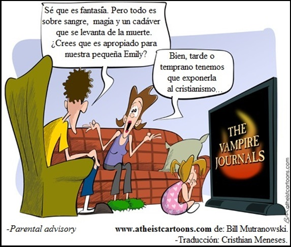

La mala educación
A los pobres déjelos pobres, a los ignorantes déjelos ignorantes. Solo entrégueles unas migas de progreso para que lo adulen y le agradezcan por ello mientras les enseña a odiar al que ha alcanzado metas, a quien le cuenta que ha sido engañado, a quien puede valerse por sí mismo y no se deja adoctrinar: porque ha adquirido conocimiento y una relación con la realidad.
Esta es una de las estratagemas adoradas por la política y la religión.
No sea parte del mundo sumiso. Cada momento es oportuno para abrir la mente a las evidencias que reposan en un jardín de hechos florecientes. La verdadera revolución que necesita la humanidad radica en aquella que se interesa en mejorar la educación y promover el pensamiento crítico. Esta realidad no le interesa ni a la mal llamada “izquierda” ni a la “derecha”, tampoco le interesa a los grupos religiosos de colores y tonos variados. Nosotros, ustedes, usted, todas las personas deben razonar muy bien, tratar de liberarse de relaciones que los mantengan temerosos, condicionados y engañados, retirarse en la medida de lo posible y al ritmo de las pruebas que se sincronizan con lo evidente.
En una de sus novelas más emblemáticas, Charles Dickens expresó una realidad que, lamentablemente para nuestro hogar, sigue estando presente: “Es una melancólica verdad que incluso grandes hombres tienen pobres relaciones”. (Bleak House, 1852-1853). Esa verdad, esa melancólica verdad, va más allá de una novela, de una frase que se ha hecho inmortal, moldeándose, de forma muy acertada al declive que los denominados “grandes” lucen para nuestra decepción. Esta inconsolable certeza está inmersa en el caos creciente de esa parte de la humanidad que debemos transformar, de esta humanidad que se niega a tener mejores relaciones con los hechos y las realidades latentes 1.
Si hay mayor información, lo ideal sería que el razonamiento sano fuese el más sobresaliente, pero las personas que caminan al ritmo de la tradición y la autoridad opresora, no aceptan los errores obvios, ni quieren centrarse en los temas. Un punto breve de la discordia social es, como siempre, la disputa del poder, la necesidad y ansías de consumo irrelevantes que brinda como tentación bendita el capitalismo, los mandamientos y el reino prometido del comunismo, o los consuelos paradisíacos para los bienaventurados que se crucifican bajo el temor a la religión. De esta última ha aprendido la política, y ha sido nefasto desde que cooperan entre ellas. Las creencias de los grupos religiosos y los partidos políticos diversos, han sido los protagonistas de tanta tragedia en este hogar azul que se baña de rojo sangriento. Sin embargo, es por la crueldad de los credos que la evidencia va a hablar hoy, porque la religión le debe mucho a la humanidad, pues la ha pisoteado sin piedad alguna. Toda religión va en contradicción de otras, -aunque comparten su temor y morbo hacia el cuerpo femenino-, y así, entre religiones y sectas se forman círculos de subjetividad cultural. Cuando un fiel de otra religión se acerca a los cristianos para que crean en Alá, en Vishnú, en la nueva era, o en “x” dogma, ellos (los cristianos) sacan su escudo y dicen: Cristo es la verdad y la vida, Jehová es mi pastor, nada me faltará. Luego de esto, les dicen a los evangelizadores rivales: ¡muéstrame las pruebas! Entonces uno se pregunta: ¿y cuáles son las de los cristianos? Exigen que otro traiga pruebas, ¿y las suyas?
En el sector creyente quieren polarizar el bien y el mal, el frío y el calor, hablando de vida en el más allá. Preocúpense por lo que saben, no por lo que desconocen. Día a día tenemos que tolerar esto: “Cree y tendrás todo, no eres nada sin dioses, sin creencias”. “Con Dios todo, sin Dios nada”. Eso no es un argumento, es simplemente una provocación. Sobre todo cuando no tienen el respaldo para defender su postura. Por ejemplo, las muertes provocadas por el cristianismo superan con creces las muertes de otras sectas y religiones. Sin embargo, como ahora el islam es el más activo en lo que antes hacía el cristianismo –en cuanto a sangre–, entonces les predican a sus inocentes fieles que el Corán contiene órdenes homicidas, pero que su Biblia no. Severo engaño. Veamos, los cristianos hacen eco de que en el Corán se ordena matar a quienes no crean, a los infieles, lo cual es cierto. En dicho libro, en la aleya (versículo) 5, sura (capítulo) 9, dice: “mata a los infieles dónde los encuentres”. La aleya 12, sura 8, dice: “Yo sembraré el terror en los infieles y vosotros cortad sus cabezas”. ¿Se asustó, verdad? ¿Esto no es correcto? Estamos de acuerdo, es un gran salvajismo, y resulta que en la Biblia también se presenta esto. En Deuteronomio 13: 6-10 se expresa 2:
“Si te incitare tu hermano, tu hija, tu mujer o tu amigo íntimo servir a dioses ajenos (…) de los pueblos que están en vuestros alrededores desde un extremo de la tierra al otro; no consentirás ni le tendrás misericordia, ni lo encubrirás, sino que lo matarás; (…) Le apedrearás hasta que muera, por cuanto procuró apartarte de Jehová tu Dios”.

¿Lo quiere más claro? Bueno, en el nuevo testamento vemos que:
“Porque he venido para poner en disensión al hombre contra su padre, a la hija contra su madre, y a la nuera contra su suegra; y los enemigos del hombre serán los de su casa. El que ama a padre o madre más que a mí, no es digno de mí; el que ama a hijo o hija más que a mí, no es digno de mí; y el que no toma su cruz y sigue en pos de mí, no es digno de mí”.
—Mateo 10:35.
Cristo aún no estaba contento con todo el odio que expresó a quien no creyera en él. Después de resucitar (según el mito), dejó otra joya:
“… Id por todo el mundo y predicad el evangelio a toda criatura. El que creyere y fuere bautizado, será salvo; más el que no creyere, será condenado”.
—Marcos 16:15-16.
Esto es totalmente absurdo, discriminatorio y poco amoroso. Esos son los valores familiares bíblicos. Los budistas, escépticos, ateos, agnósticos, hinduistas, panteístas y miles de personas que se comportan bien, ayudan, aman y colaboran, no se “salvarán” solo porque no creen en un tal “Jesucristo”, ¿qué es esta dictadura? ¿Y quieren que sus creencias se tomen en serio? ¿Qué dicen? Ya veo, algunos están formulando las excusas más extravagantes. Bien, entonces toquemos unos pequeños puntos. ¿Tienen un libro sabio? Qué tal la orden de matar a los hijos por desobedecer: Éxodo 21:15, Levítico 20:9, seguidas en el nuevo testamento: Mateo 15:4-7, y con una dulce incongruencia en Marcos 7:9-13 al decir que fue Moisés el de la orden, y no Dios, como escrito está en Éxodo, Levítico y Mateo. Pues la ley no es de Moisés, es de Dios, la cual fue dictada a Moisés, es muy claro:
“Porque Dios mandó diciendo: Honra a tu padre y a tu madre; y: El que maldiga al padre o la madre, muera irremisiblemente”.
—Mateo 15:4.
Ya escucho los reproches, los he escuchado desde niño, todos sin fundamento: los caminos de Dios son misteriosos, nuestro entendimiento no alcanza, el contexto… Es la misma impotencia para buscar justificación a toda la barbarie bíblica. Para defender lo indefendible. Como lo comprendió el escritor J.S. Bullion Jr. al expresar un hecho tan viejo como las propias escrituras judeo-cristianas:
“Ejércitos de estudiosos y teólogos han encontrado por siglos un empleo respetado creando artificiosas explicaciones de cómo la Biblia frecuentemente no quiere decir lo que dice”.
Acá debemos hacer una pausa, ya que es muy interesante cómo quieren jugar con el tema de la “verdad”. Existe la torpe frase: “Cada uno confía en su propia verdad, ¿y qué?”. Esta es de mis favoritas. Es una frase utilizada para justificar cualquier atrocidad y cualquier absurdo de preferencia. Pues no, no hay verdades propias, las verdades simplemente: son. Lo que tenemos son opiniones propias, pero en las creencias a Ud. lo reclutan para opinar cómo le digan o le enseñen a creer, entonces ni eso es propio para quien ha cerrado su mente. Recordemos lo que acabo de citar acerca de asesinar a los hijos. En el evangelio de Mateo Ud. puede ver cómo se reanuda lo que el personaje que llaman Dios exige en el libro de Levítico (que él inspiró y mandó a divulgar, ¿recuerda?).
El personaje principal de la mitología cristiana: Jesucristo, recuerda que: la ley dice que si tus hijos no te hacen caso, debes matarles irremisiblemente, asesínalos porque no honraron el mandamiento, escrito está. ¿Es eso bueno? Pues no, no lo es. No es mi verdad contra su verdad, es mi opinión contra su opinión, y solo es verdad que asesinarlos está mal, esa es la verdad, punto. Un Dios amoroso, Todopoderoso y sabio no puede ordenar disparates y bestialidades como las miles y miles que componen la Biblia. Quien diga que se debe matar a un niño porque lo desobedeció, es un canalla enfermo, un despiadado, y eso es absolutamente cierto. Esto es un delito, es la promoción al infanticidio inminente, está mal y es la verdad en ese tema. Esto no es “mi” verdad contra la verdad de otra persona, contra “su” verdad. Simplemente es la verdad.
No olvidemos el machismo en 1ra Corintios 11:3, 1ra Pedro 3:1, 1ra Timoteo 2:11. ¿Esa es la verdad y el camino? ¿Decimos “amén” o “palabra de Dios”?, y esto por citar solo unos simples ejemplos del reality cristiano a ritmo de reguetón. Lean la Biblia completa, desde el Génesis hasta el Apocalipsis se permite, se impulsa y se celebra la muerte, el odio, la esclavitud, el rechazo a la mujer, al ser humano. La Biblia es uno de los peores libros jamás escritos y es el peor que he leído. El hecho de atribuirlo a una deidad lo hace más inmoral y falso de lo que ya es. Muchos dirán: “¡Qué blasfemia!”. ¿En serio? ¿Por qué no leen, miran a su alrededor y descubren la verdad? “Blasfemia” es creer que “algún Dios” en su omnipotencia y amor pueda inspirar libros de esta clase, hacer lo que hizo según esas narraciones mitológicas. Blasfemia es creer que la excusa de la ilusión llamada libre albedrio no va en contra de la predestinación que manifiestan sus propios libros y cultos, ese concepto de predestinación infantil y vacío que el misógino Pablo de Tarso proclama con gran ignorancia. Blasfemia es decirle a la gente que un profeta o un dogma es el real, sin tener pruebas ni ejemplo que lo sustente, y sin ser relevante para el progreso.
Es falso decir que el que no crea en Cristo, o no lo acepte como su salvador: es un hereje, un traidor y pecador que irá a un tonto infierno. Infierno que ni siquiera tiene sentido partiendo de la descripción. Blasfemia es crear división para obtener fieles, llenar templos, decir que quien no crea lo que alguna cultura se inventa: será condenado. Blasfemia es decir que no creer en dioses sea cuna de abominación, de maldad, cuando la historia nos muestra lo contrario, y la maldad se ha generado de las religiones, de los relatos de dioses, de ideologías políticas, del abuso capitalista, de extremistas comunistas, nazis, persas, cristianos… de ansias de poder.
Y hablando de absurdos, odiosas historias y enseñanzas bíblicas, recordemos cómo el propio Moisés probó la satisfacción de derramar sangre para cumplir con el dictador de turno. Como muestra, cuando los israelitas estaban en el desierto y hallaron a un hombre que estaba reuniendo leña el día sábado. El Señor le dijo a Moisés que ese hombre debía morir (ya saben, por irrespetar el día del Señor). Le dijo con mucho cariño: apedréelo toda la congregación fuera del campamento. Como se lo mandó diosito a Moisés, lo sacaron del campamento y lo apedrearon hasta matarlo (Números 15: 32-36). Por medio del capítulo 5 de Ezequiel quedaron registrados unos cariñitos que mandó este Dios amable, el piadoso dijo que después de destruir por partes a Israel, enviaría a sus enemigos a perseguirlos.
Demos un salto en el tiempo. En el siglo I de nuestra era, algunos judíos se cansaron de esperar al mesías y se inventaron uno, el cual tenía el nombre más común, repetido y gastado de la época: Jesús. Luego Pablo de Tarso se encarga de la publicidad, se crea la secta cristiana, hija no reconocida del judaísmo. Vemos cómo en el nuevo testamento se justifican y continúan las fechorías del antiguo testamento, como Pablo de Tarso recordándole a los Efesios que la esclavitud es legal, que se debe obedecer y temer al amo, con sencillez, así como a Cristo, de corazón haciendo la voluntad de Dios, teniendo en cuenta que el bien que se haga será regresado, sea para el siervo o para el que está libre.
Ya que hablamos de esto, cómo olvidar que el personaje que inventaron de Jesucristo, nunca se levantó contra la esclavitud, así como no hizo otras cosas que pudieron haber sido valiosas; por el contrario, gracias al capítulo 12 de Lucas, sabemos que Jesucristo trataba de bienaventurado al siervo fiel, y que estaba de acuerdo con golpear poco o mucho a los sirvientes, siempre y cuando se lo “merecieran”. Si no Ud. sigue a Jesucristo ni cree en quien le envió: está condenado (Juan 5:24). Si practica la parábola del buen samaritano –una historia agradable– (Lucas 10:30-37), de todas formas pierde, porque como ya se ha expuesto –y escrito está en su “santa palabra”–, si Ud. no recibe al hijo del Señor, no tiene potestad de ser hijo de Dios, de este “Verdadero y Único”. La ira de Dios –el amoroso y justo– va a airar las naciones. Pero requiere que Ud. se incline ante él, como los 24 ancianos sentados delante de Dios en sus tronos, que para el momento contaremos que se postraron sobre sus rostros, y adoraron a Dios, porque su ira ha de venir, y el tiempo de juzgar a los muertos. También requiere que temamos su nombre (no el de Ganesha, Vishnú, Bumba o Apolo, sino el de ese de la Biblia) porque se dará el galardón a los arrodillados de la dictadura celestial:
“a tus siervos los profetas, a los santos, y a los que temen tu nombre, a los pequeños y a los grandes, y de destruir a los que destruyen la tierra”.
—Apocalipsis 11:18.
En los capítulos anteriores y posteriores de esta revelación, vemos la ternura y la piedad de un Todopoderoso con métodos tan justos como los que ya permitió en la inquisición, las cruzadas, la evangelización indígena y mil etcéteras; no en su nombre, sino por su palabra, por su mandato. Él vendrá acompañado para repetirlos y acariciar con su barba a esa creación tan bella que pudo revelarse y esconderse del que todo lo sabe y que en todos lados habita:
“Fueron desatados los cuatro ángeles que estaban preparados para la hora, día, mes y año, a fin de matar a la tercera parte de los hombres”.
—Apocalipsis 9:15.
Ni siquiera leen la Biblia, Dios mandó a matar por millones. El dolor de cabeza de todo teólogo, apologista, creyente, es que si un libro es inspirado por “Dios”, no puede tener ni una línea de odio, o incongruencias, intolerancia, dictadura y maldad, pero la Biblia contiene eso y más. El personaje de Jesús apoya las escrituras, la ley dictatorial e injusta de Dios que ha causado tragedia por tantos años:
“No penséis que he venido para abrogar la ley o los profetas; no he venido para abrogar sino para cumplir”.
—Mateo 5:17-18.
Cristo es el “hijo de Dios”, es Dios mismo encarnado en su avatar humano, es Yavhé, Jehová, el rey de reyes (no, no es Don Omar), el Señor, el Padre… por lo cual el antiguo testamento no se puede abolir, como lo intentan los más impotentes apologistas. El antiguo testamento es la biografía del padre Dios que amorosamente asesina y asesina, y que luego ya saben (siguiendo el relato bíblico) por lo que hizo pasar a su propio hijo: la pasión de Cristo. Pero no se confunda con la palabra “pasión”, que no fue nada con Magdalena. Fue con torturas y una crucifixión (que en realidad es: cruz y ficción), lo más astuto que se le ocurrió al ser más sabio y poderoso del universo: para salvar a la humanidad. Deben entender, los autores de Mateo, Marcos, Lucas y Juan (autores que no presenciaron lo contado), no eran muy buenos guionistas, su inspiración era el antiguo testamento.
Continuando con los desaciertos de las divisiones bíblicas, sabemos que luego los discípulos y epístolas del nuevo testamento dan por cierto lo escrito en el antiguo, y hasta hacen las referencias más disparatadas de muchos relatos y personajes. De hecho, Cristo vino para borrar el daño de Adán y Eva (guiño), entre otros asuntos, como resolver el problema que él mismo creó y luego trató de destruir sin éxito. Algunos, como los católicos jerarcas, reconocen que Adán y Eva no existieron, pero en su eterna ignorancia no se dan cuenta que no deben pensar así, no solo porque sus ancestros (quienes sí cumplían la Biblia) estarían decepcionados, sino porque entonces Cristo vino (otro guiño) para eliminar algo que no sucedió. Pero claro, para muchos, reconocer lo ignorante e infantil en las historias de Adán y Eva, o Noé, les parece racional (ya era hora), sin embargo, otras enseñanzas e historias sí las hacen ver como reales, incluso las que están en el mismo Génesis, de donde conocemos, precisamente a: Adán y Eva. La principal que hacen ver real, y en la que creen debido a su inmadura selectividad de lo que les convenga, es la primera mentira: “Dios” es el creador y a él debemos rendirle tributo si no queremos ir al tormento eterno que amablemente nos ha regalado.
Tomando otros ejemplos en los desaciertos bíblicos, vemos como el salmo 14:1 expone otra mentira: “Dice el necio en su corazón: No hay Dios. Se han corrompido, hacen obras abominables; no hay quien haga el bien”. Uno no sabe si reír o llorar, sobre todo cuando lo citan en misas y cultos, y los fieles se levantan con la emoción del irracional. Las fábulas de Jesús las expuso Buda mucho antes de dicho mesías. Sí, Buda vivió en el año 500 antes del “mesías cristiano”. Pero a diferencia de la imposición de Jesucristo para tener fe en la palabra, en la tradición y en la autoridad, Siddhartha Gautama (Buda) dio una frase racional y excelente, la cual también repito cada vez que puedo:
“No crean en nada, Oh monjes, meramente porque se lo hayan dicho… o porque sea tradicional, o porque ustedes mismos lo hayan imaginado. No crean lo que su maestro les dice meramente por respeto al maestro. Pero cualquier cosa que, después de apropiado examen y análisis, hallen ustedes que conduce al bien, al beneficio, al bienestar de todos los seres, esa doctrina créanla y aférrense a ella, y tómenla como guía”.
Aunque como bien lo entendió Christopher Hitchens: no existe la solución oriental. No podemos olvidar que el budismo tiene algo rescatable en filosofía. A esto le sumamos los cientos de científicos, actores, activistas, profesores, y cualquier persona que no tiene a “Dios” en su corazón, quienes han ayudado, han hecho y hacen cosas buenas. Sí, sin Dios o Santa Claus en sus corazones. Pero bueno, qué se puede esperar, una mentira más, una calumnia más o una menos de las miles de este libro que se hace pasar por “sabiduría”, eso no es ninguna novedad. Y bueno, en el tercer capítulo de Juan, la perversión en 3:16, después de expresar el famoso horror de un ser supremo, el más inteligente, que da a su hijo unigénito como una salida para la salvación (y hay gente con estudios que aún no ve la depravación y vacío de esto), se hizo eco otra vez de ese fatuo y necio invento de condena a quien no crea en ese Dios particular que vino a arrasar vidas con su mantra: me amas o te condeno.
“El que en él cree, no es condenado; pero el que no cree, ya ha sido condenado, porque no ha creído en el nombre del unigénito Hijo de Dios”.
—Juan 3:18.
Y por si alguien quería “interpretar” lo que quisiera (típico para engañar a los incautos), y no lo que realmente es, debía decirse con mayor voz dictatorial:
“El que cree en el Hijo tiene vida eterna; pero el que rehúsa creer en el Hijo no verá la vida. Sino que la ira de Dios está sobre él”.
—Juan 3:36.
No se pierda más de esta sabiduría, lea el Apocalipsis. Si creía que con esto todo iría mal, el Apocalipsis le mostrará que todo puede y debe ser peor. ¿Y así piden “respeto”? Qué triste que ni siquiera sepan qué es el respeto y la tolerancia, pero aún así se quejan cuando se muestran estas críticas que, efectivamente, son respuestas a los horrores bíblicos, horrores de los cuales no ponen quejas, porque es la palabra maravillosa de Dios, quien desde sus errores en el orden de la existencia del universo, la tierra y las formas de vida, hasta la condenación a quienes tampoco crean en él a través de Jesucristo y, por supuesto, cientos de años posteriores entre sangre y disputas debido a esa astucia del omnisciente, nos deja ver que todo esto lo hizo para desquitarse del aburrimiento que tuvo en la primera parte de su eternidad cuando solo estaba “la nada”, y aparentemente ella no quiso jugar más con él, lo que le dio el deseo de crear algo. Deseo: la primera característica humana de Dios. Una de tantas que luego mostraría, como la ira, y no me guardaré la obviedad: porque fue hecho a imagen y semejanza de quienes lo inventaron: los seres humanos, llenos de defectos y desconocimiento.
Qué triste que la gente no sepa que su religión es un plagio de otros dogmas, incluso de mejores que los recopilados. Pero lo más triste es que hay gente que no conoce la cultura de otras religiones y dan juicio de la propia como la única y la “real”, para luego decir falsamente que su libro o culto está lleno de sabiduría. Qué mal informados están algunos, alimentando las malas intenciones de los fundamentalistas. Se esconden de la realidad, juegan con la verdad para desaparecerla e inventar algo que puedan mostrar como esa verdad, hasta que la gente la crea. Desconociendo que de todas formas: sigue siendo mentira.
Es molesto que en nuestro hogar se siga señalando la no creencia en seres sobrenaturales como un defecto, y es mentirle a la humanidad con la mala educación de siempre. El ateo no cree ni en Dios ni en el Diablo. El ateísmo es simplemente no creer en las mentiras e invención de los dioses de esta humanidad y sus artilugios. El escéptico no cree en lo que no tenga sustento, duda hasta encontrar, hasta tener pruebas. No hay Dios ni Diablo, el escepticismo es no creer en esos inventos divinos, no mantener creencias sobrenaturales, pues no aceptamos en ningún terreno: cualquiera de las afirmaciones absurdas o sin fundamento y sin evidencia que se presentan. Lo que le quieran inventar de ahí en adelante es solo capricho e impotencia, la cual resulta al ver que podemos ser buenas personas sin la hipocresía y el condicionamiento de hacerlo para recibir una supuesta: salvación.
Piense en esto un momento, por favor. ¿Ya lo hizo? Bien, pasemos a la segunda parte.
Notas
- 1
-
Este trabajo hace parte del libro: Notas rebeldes para un mundo sumiso. Disponible a nivel internacional en Amazon: http://www.amazon.com/dp/1499371624 ; en España: http://www.amazon.es/dp/1499371624 ; entre otras plataformas.
- 2
-
Todas las citas bíblicas utilizadas en este trabajo fueron contrastadas con las manipulaciones que se han hecho a las traducciones, desde que se publicaron nuevas versiones. Dichas adaptaciones que han ido eliminando, por conveniencia, pero con poco éxito para camuflar ciertas obviedades y la precisión traducida directamente de los textos originales: hebreo, arameo y griego, que reúne la Biblia con deuterocanónicos, la cual cuenta con la aprobación del Consejo Episcopal Latinoamericano.
Sin embargo, para las citas textuales se ha usado la revisión reina Valera 1960, usando como parte del proceso:
La Biblia, versión reina Valera 1960 “Amén-Amén”, disponible en versión digital. http://www.amen-amen.net/RV1960/
-
El nuevo testamento de nuestro señor Jesucristo con Salmos y Proverbios, los Gedeones internacionales.
Antigua Versión de Casiodoro de Reina: 1569.
Revisada por Cipriano de Valera: 1602.
Otras revisiones: 1862, 1909 y 1960.
La Biblia en una de sus versiones en Inglés: The living Bible. _Tyndale House Publishers, Inc, 1980. En cuyo prefacio indica que dicha versión tiene como propósito transmitir la palabra y su mensaje, de la forma más exacta posible.
Las caricaturas pertenecen a http://www.atheistcartoons.com, de Bill Mutranowski, traducidas por el autor. En el enlace de atheistcartoons las encontrará en su idioma original.
Volver a la sección Examinando las religiones
Comentarios
Comments powered by Disqus